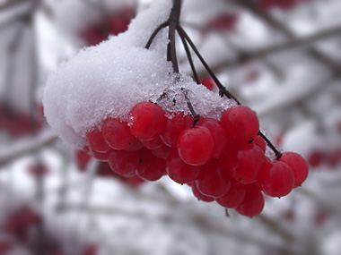

La nouvelle année est arrivée...
donderdag 1 januari 2004 | Persoonlijk
…en hoe! Net opgestaan, gordijnen open: de hele wereld ondergesneeuwd. Magnifiek!
Aan alle vaste en toevallige bezoekers van deze pagina:
een bijzonder voorspoedig, stabiel en avontuurlijk 2OO4!

Nieuwjaarsochtend: besneeuwde bessen van de Helderse Roos aan de rand van Bos 't Ename
Rita op 3 januari 2004
Mooi en verfrissend — een trosje knalrode bessen met wat ijzige sneeuw erop!